Draw what you see.
On paper.
LiCida lays your template over the camera image of your sheet.
You look at the screen and simply trace the lines.
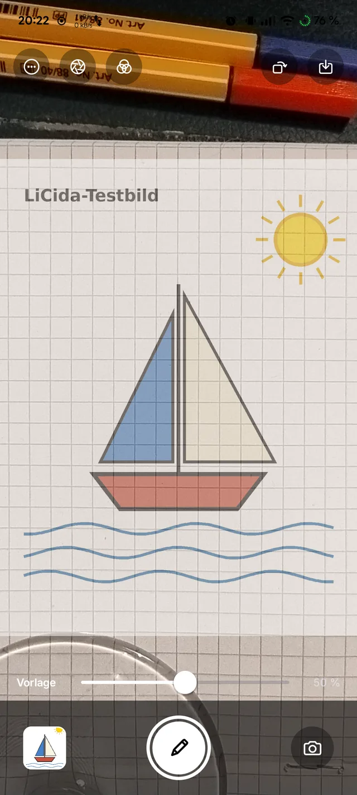
The drawing tool
of the old masters.
A camera lucida mirrors the subject onto your paper – painters have used it to transfer outlines for over 200 years. LiCida does the same with your phone’s camera: modelled on the iOS app “Camera Lucida”, rebuilt for Android and designed following Apple’s Human Interface Guidelines.
How it works
Three steps.
Phone above the paper, pick a template, trace.
1 · Set up
Place the phone firmly above the paper, camera facing down – on a holder, a tripod or a stack of books.
2 · Arrange
Choose a picture from Photos or Files and use two fingers to place it where it should go on the paper.
3 · Draw
Camera and template are now linked. Zoom up to 30×, focus, lock exposure – and trace.
Pictures
As tidy as the Camera.
Black surface, floating glass buttons, everything in its place – and nothing to distract you while drawing.
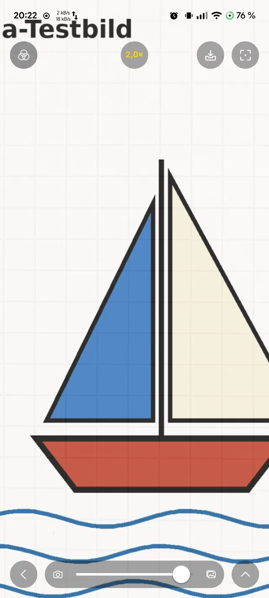
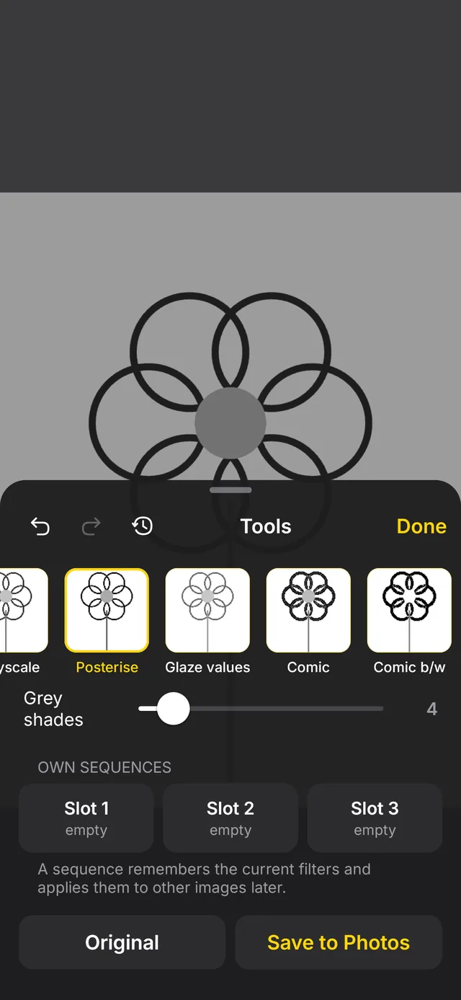
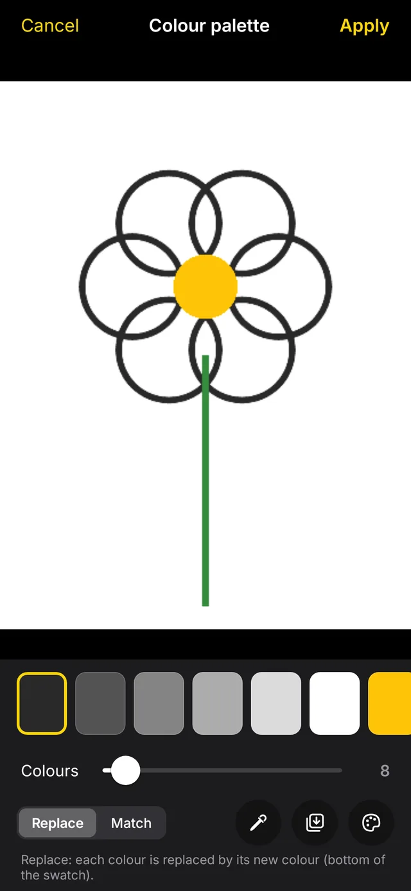
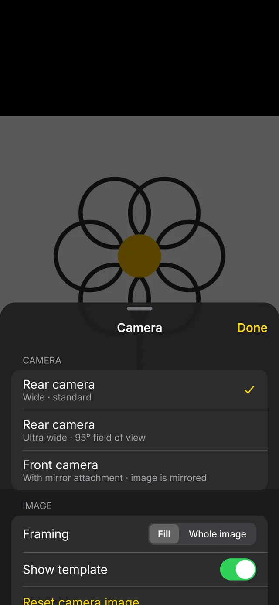
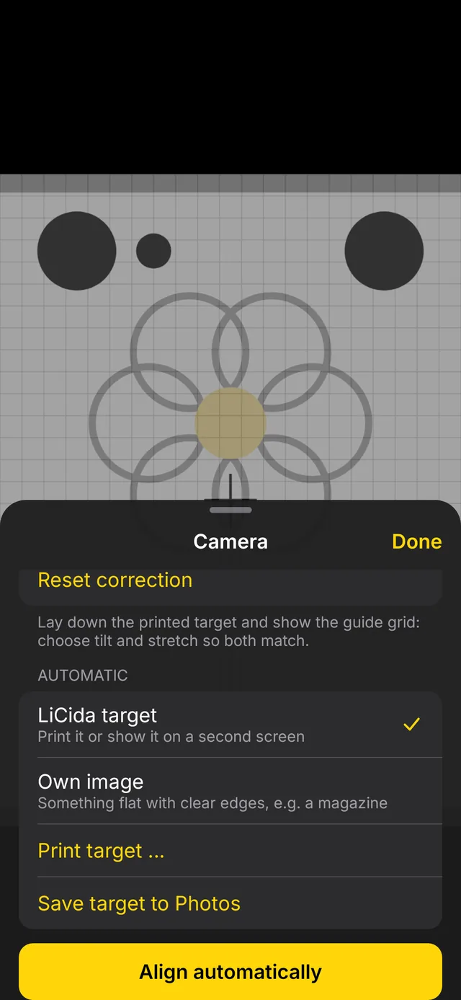
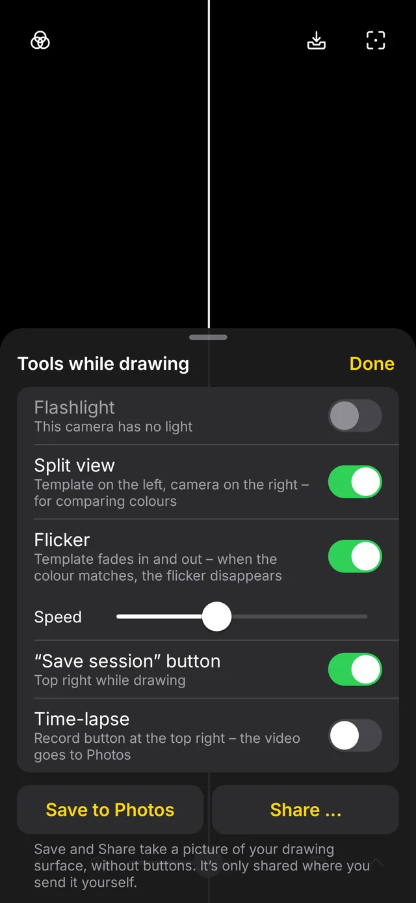
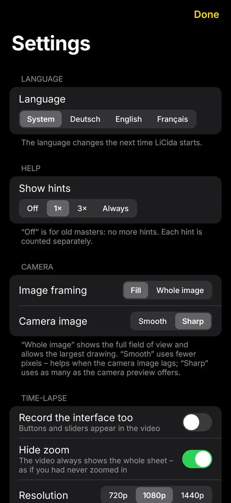
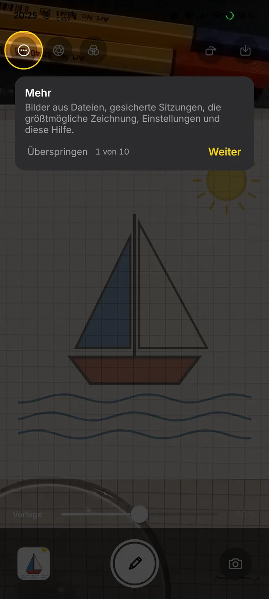
Sessions
Pick up tomorrow
right where you left off.
A session remembers the template, filters, position, camera and alignment – and a snapshot of your sheet.
- Find your sheet again: the snapshot lies over the camera image, and you line the paper up with it.
- Or automatically: LiCida finds the shift, rotation and scale by image matching and moves the template along.
- Only on the device – nothing is uploaded.
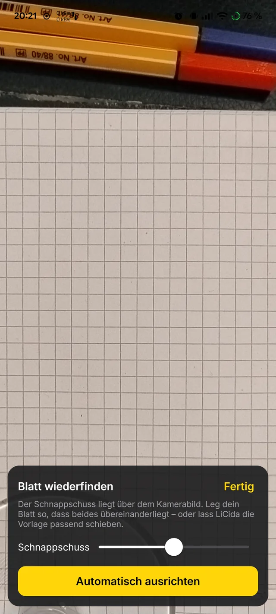
Drawing big
For the wall.
From a distance.
In projector mode the camera image stays black – only the template glows. A Bluetooth keyboard, a controller or a selfie remote controls zoom, opacity and flicker while you stand at the wall.
- Every key can be assigned – default as in the original: E Q to zoom, W A S D to move.
- Time-lapse still records: the camera keeps running.
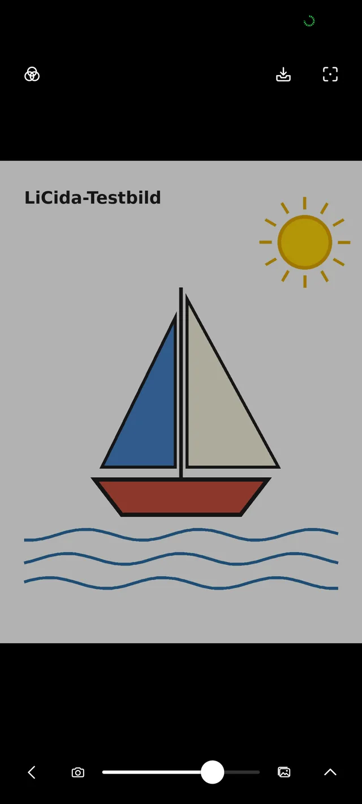
Features
And so much more.
The features of the iOS app – without a single purchase.
Filters that stack
Greyscale, posterise, value studies, comic, neon, edges, threshold, grid, corner marks – with history and three custom chains.
Colour palette
Reduces the template to a few colours. While drawing you hide colour after colour – ideal for painting.
Automatic alignment
Print the target sheet, lay it down, tap – LiCida straightens the camera image as if the camera were looking straight down. A purchase in the iOS app, simply included here.
Time-lapse
An hour of drawing becomes a minute of video – with Android’s own encoder, straight into your photos.
Split view and flicker
Template on the left, paper on the right – or the template fades in and out. When the colour is right, the flicker disappears.
Tour and guide
On first launch a tour shows every button. The guide is in the app – and as a PDF to print (currently in German).
Privacy
Your pictures
stay with you.
LiCida only sees the one picture you choose, and the camera. Technically it cannot send anything.
Download
Get started. For free.
Version 0.1 beta for Android 10 and later.
F-Droid

Repository fingerprint
8DA9DEF44C65856A1B098DB7BF876D48514997EF17C7256E23E91EAC6C486500
APK
Download and install directly. LiCida only asks for the camera.
App signature
SHA-256: 7aca15dc655f1581b554f0a2c93cf8eae271330d5c2684dca47a1a26e45da75d
Source code
Every line open to inspect, all versions available to download. Bugs or ideas are welcome in the issue tracker.
Developed by Olaf Winkler in Schleswig-Holstein.
Checksums: SHA256SUMS · Beta, because LiCida has only been tested on a few devices so far.